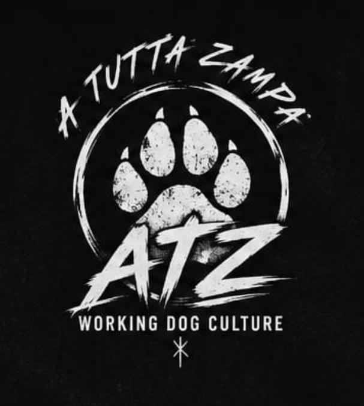

Educare un cane non significa spegnerlo. Significa imparare a comunicare davvero. Relazione prima di ego. Presenza prima di imposizione.
Il lavoro non serve a creare macchine. Serve a costruire fiducia, lucidità e stabilità sotto pressione. Un cane da lavoro non si domina. Si costruisce.
Qui il cane non è uno strumento. È il compagno con cui entri nel caos. Ogni ricerca è una responsabilità condivisa. Ogni rientro è un ritorno in due.
DWD significa Dogs With Disabilities. Non raccontiamo cani spezzati. Raccontiamo cani che continuano ad andare avanti. Diversi non significa inferiori.
Alcune cose non servono a essere spiegate. Servono a essere portate addosso. Norse nasce come identità, non come estetica.
Non tutto quello che conta finisce in una lezione.
Non tutto quello che insegna nasce da un esercizio.